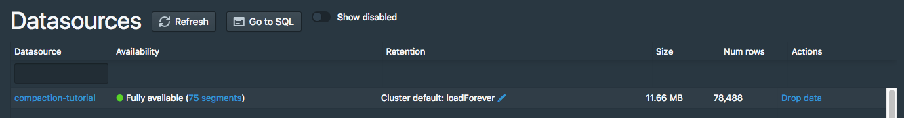
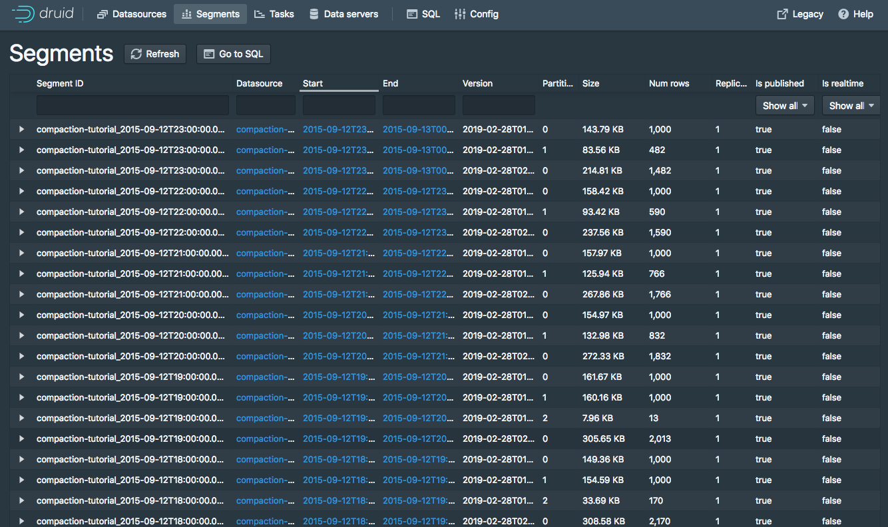
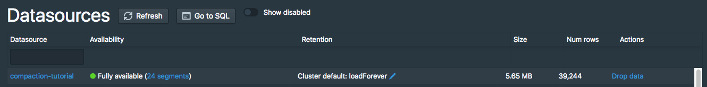
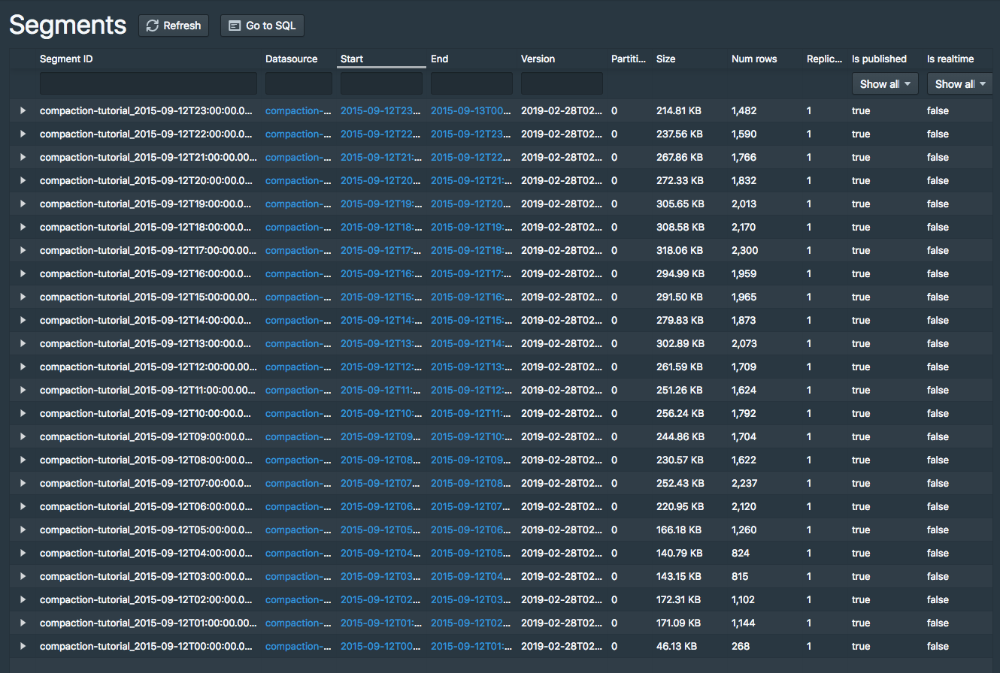
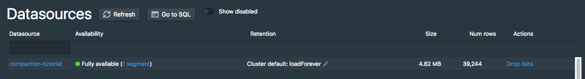
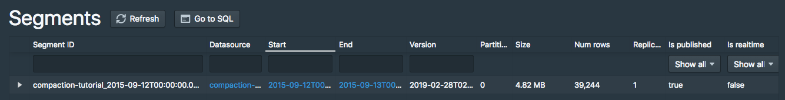

Tutorial: Compacting segments
This tutorial demonstrates how to compact existing segments into fewer but larger segments.
Because there is some per-segment memory and processing overhead, it can sometimes be beneficial to reduce the total number of segments. Please check Segment size optimization for details.
For this tutorial, we'll assume you've already downloaded Apache Druid (incubating) as described in the single-machine quickstart and have it running on your local machine.
It will also be helpful to have finished Tutorial: Loading a file and Tutorial: Querying data.
Load the initial data
For this tutorial, we'll be using the Wikipedia edits sample data, with an ingestion task spec that will create 1-3 segments per hour in the input data.
The ingestion spec can be found at quickstart/tutorial/compaction-init-index.json. Let's submit that spec, which will create a datasource called compaction-tutorial:
bin/post-index-task --file quickstart/tutorial/compaction-init-index.json
After the ingestion completes, go to http://localhost:8888/unified-console.html#datasources in a browser to see the new datasource in the Druid Console.

Click the 51 segments link next to "Fully Available" for the compaction-tutorial datasource to view information about the datasource's segments:
There will be 51 segments for this datasource, 1-3 segments per hour in the input data:

Running a COUNT(*) query on this datasource shows that there are 39,244 rows:
dsql> select count(*) from "compaction-tutorial";
┌────────┐
│ EXPR$0 │
├────────┤
│ 39244 │
└────────┘
Retrieved 1 row in 1.38s.
Compact the data
Let's now compact these 51 small segments.
We have included a compaction task spec for this tutorial datasource at quickstart/tutorial/compaction-keep-granularity.json:
{
"type": "compact",
"dataSource": "compaction-tutorial",
"interval": "2015-09-12/2015-09-13",
"tuningConfig" : {
"type" : "index",
"maxRowsPerSegment" : 5000000,
"maxRowsInMemory" : 25000,
"forceExtendableShardSpecs" : true
}
}
This will compact all segments for the interval 2015-09-12/2015-09-13 in the compaction-tutorial datasource.
The parameters in the tuningConfig control how many segments will be present in the compacted set of segments.
In this tutorial example, only one compacted segment will be created per hour, as each hour has less rows than the 5000000 maxRowsPerSegment (note that the total number of rows is 39244).
Let's submit this task now:
bin/post-index-task --file quickstart/tutorial/compaction-keep-granularity.json
After the task finishes, refresh the segments view.
The original 51 segments will eventually be marked as "unused" by the Coordinator and removed, with the new compacted segments remaining.
By default, the Druid Coordinator will not mark segments as unused until the Coordinator process has been up for at least 15 minutes, so you may see the old segment set and the new compacted set at the same time in the Druid Console, with 75 total segments:


The new compacted segments have a more recent version than the original segments, so even when both sets of segments are shown in the Druid Console, queries will only read from the new compacted segments.
Let's try running a COUNT(*) on compaction-tutorial again, where the row count should still be 39,244:
dsql> select count(*) from "compaction-tutorial";
┌────────┐
│ EXPR$0 │
├────────┤
│ 39244 │
└────────┘
Retrieved 1 row in 1.30s.
After the Coordinator has been running for at least 15 minutes, the segments view should show there are 24 segments, one per hour:


Compact the data with new segment granularity
The compaction task can also produce compacted segments with a granularity different from the granularity of the input segments.
We have included a compaction task spec that will create DAY granularity segments at quickstart/tutorial/compaction-day-granularity.json:
{
"type": "compact",
"dataSource": "compaction-tutorial",
"interval": "2015-09-12/2015-09-13",
"segmentGranularity": "DAY",
"tuningConfig" : {
"type" : "index",
"maxRowsPerSegment" : 5000000,
"maxRowsInMemory" : 25000,
"forceExtendableShardSpecs" : true
}
}
Note that segmentGranularity is set to DAY in this compaction task spec.
Let's submit this task now:
bin/post-index-task --file quickstart/tutorial/compaction-day-granularity.json
It will take a bit of time before the Coordinator marks the old input segments as unused, so you may see an intermediate state with 25 total segments. Eventually, there will only be one DAY granularity segment:

